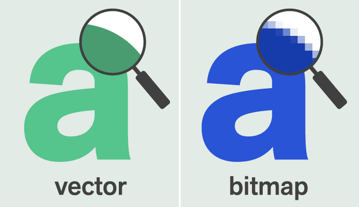

Een afbeelding die is opgebouwd uit pixels is een bitmapafbeelding. Een bitmapafbeelding kost veel opslag en als er wordt ingezoomd is de afbeelding niet meer scherp, omdat de pixels dan zichtbaar zijn. Om dit te voorkomen kan je ook kiezen voor een vectorafbeelding. Bij een vectorafbeelding worden de vormen waaruit de afbeelding is opgebouwd opgeslagen. Vectorafbeeldingen bestaan uit locatie, kleur, grootte en vorm. Met deze kenmerken wordt er een geheel van de vectorafbeelding gemaakt. Om meer over deze soorten afbeeldingen te weten is er hieronder een video te vinden over vector- en bitmapafbeeldingen. Geluid is ook iets wat opgeslagen moet worden. Geluid bestaat uit trillingen in de lucht, om geluid op te slaan moeten deze trillingen worden omgezet naar nullen en enen. Door een microfoon worden de trillingen in de lucht omgezet naar een elektrisch signaal. Dit signaal wordt door een computer opgevangen en dan omgezet naar digitale waarden van nullen en enen. Dit heet samplen. Tijdens dit samplen worden op bepaalde momenten de sterkte van het geluid gemeten. Dit kan worden omgezet in een grafiek, een voorbeeld van zo'n grafiek is hieronder te zien. In zo'n grafiek staan alle samples, samen vormen zij het geluid.
youtube video over vector- en bitmapafbeeldingen
